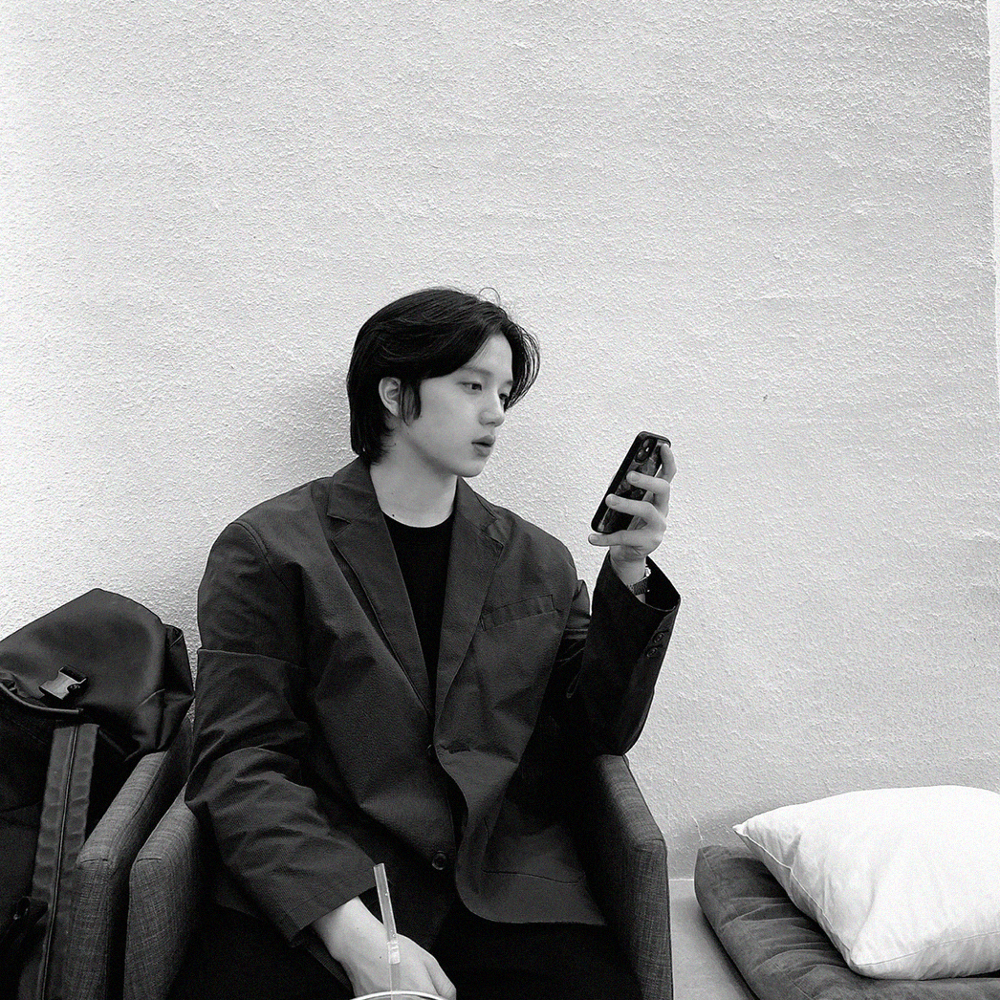

자 화 상
#1 침묵 [가치의 방향성]
작가의 성향은 부정과 고통에 크게 휘둘리지 않는 특징을 가지고 있다.
비유하자면, 염세주의에 완전히 반대되는 개념으로 볼 수 있다. 성취감 뒤에
찾아오는 삶에 대한 ‘권태’(부정의 개념이 포함된 모든 요소들)가 없는 것이
아니다.
하지만 살아가며 쌓아갈 경험과 새로운 지식들에 대한 방향성이 무한대에
가깝다는 것을 인식했으며, 이에 집중한다. 평소에 이것을 ‘입체적 방향성’이라고
말한다. 이것이 삶에서 ‘권태’에 비해 압도적으로 크며 언행의 척도가 된 것이다.
이 관계성을 권태의 특징을 녹인 흑백 장미와 침묵을 의미하는 손짓으로
표현했다.
비유하자면, 염세주의에 완전히 반대되는 개념으로 볼 수 있다. 성취감 뒤에
찾아오는 삶에 대한 ‘권태’(부정의 개념이 포함된 모든 요소들)가 없는 것이
아니다.
하지만 살아가며 쌓아갈 경험과 새로운 지식들에 대한 방향성이 무한대에
가깝다는 것을 인식했으며, 이에 집중한다. 평소에 이것을 ‘입체적 방향성’이라고
말한다. 이것이 삶에서 ‘권태’에 비해 압도적으로 크며 언행의 척도가 된 것이다.
이 관계성을 권태의 특징을 녹인 흑백 장미와 침묵을 의미하는 손짓으로
표현했다.
#2 사회적 순위 [쌓아가는 현실]
우리는 필연적으로, 혹은 자연스럽게 사회에 속한 채 살아간다. 작가 또한 이를
인식하고 그 속에서 주체적인 활동을 이어나가고 있다.
사회를 구성하는 모든 것들이 순위가 매겨지고 있고, 이를 반영해 명예, 권력,
사회적 위치가 나누어진다. 대부분의 사람들이 이를 쟁취하기 위해 맹목적으로
계단을 오르는 것처럼 보인다.
어쩌면 그들이 걸어가고 있는 곳이 그들에겐 꽃밭처럼 보일지 모르지만,
작가에게는 목적 없이 걷는 길은 공허하고 아무런 색깔이 없는 가뭄처럼 보인다.
인식하고 그 속에서 주체적인 활동을 이어나가고 있다.
사회를 구성하는 모든 것들이 순위가 매겨지고 있고, 이를 반영해 명예, 권력,
사회적 위치가 나누어진다. 대부분의 사람들이 이를 쟁취하기 위해 맹목적으로
계단을 오르는 것처럼 보인다.
어쩌면 그들이 걸어가고 있는 곳이 그들에겐 꽃밭처럼 보일지 모르지만,
작가에게는 목적 없이 걷는 길은 공허하고 아무런 색깔이 없는 가뭄처럼 보인다.

#3 방향성 [본질의 탐구]
작가는 스스로에게 같은 질문들을 항상 던진다. 내 생각의 본질은 무엇일까?

#4 향에서 맛, 그 다음 [완전함]
“나는 행복한가?”라는 질문이 떠오르는 순간이 있다. 작가는 20 년도 초여름부터
같은 질문을 스스로에게 던진다. 이전과는 다르게 이 질문에 명확하게 대답한다.
이전에는 목표 또는 가치관을 정리하지 못해 혼란스러워했다. ‘흑백 자화상’이라는
전시를 기획할 수 있었던 이유는 간단하다. 자신의 감정과 가치관, 생각을
정리하고 타인에게 전달할 수 있을 정도로 완전하다고 느꼈기 때문이다.
작가는 완전함의 향을 맡았다. 그다음 맛을 느꼈다. 이후 다음 단계를 느꼈지만
어떻게 표현해야 할지 고민 중이다. 맛을 느끼는 것 그 이상은 무엇일까?
직관적으로, 누군가와 함께 춤을 추는 듯한 감정일 것이다.
같은 질문을 스스로에게 던진다. 이전과는 다르게 이 질문에 명확하게 대답한다.
이전에는 목표 또는 가치관을 정리하지 못해 혼란스러워했다. ‘흑백 자화상’이라는
전시를 기획할 수 있었던 이유는 간단하다. 자신의 감정과 가치관, 생각을
정리하고 타인에게 전달할 수 있을 정도로 완전하다고 느꼈기 때문이다.
작가는 완전함의 향을 맡았다. 그다음 맛을 느꼈다. 이후 다음 단계를 느꼈지만
어떻게 표현해야 할지 고민 중이다. 맛을 느끼는 것 그 이상은 무엇일까?
직관적으로, 누군가와 함께 춤을 추는 듯한 감정일 것이다.

#5 고백 [솔직함]
작가의 스탠스가 만들어지는 과정에서, 유기적인 작용을 주고받은 사람들이 있다.
그들에게는 항상 고마움을 전달하고 싶다. 그 사람들에게서 많은 것들을 배웠고,
경험했다.
함께하며 많은 것들에 대해서 편견 없이 고민하고 입체적으로 바라봤으며,
복잡했지만 행복했다. 하지만 동시에 그들에게 열등감을 느끼고 있었고, 그것에
솔직하지 못해 부정적 스트레스를 받았었다. 담백하지 못한 시절이었다. 그래서
자책하며 외면했다.
긴 고민 끝에 자신을 솔직하게 받아들이며, 가장 가까운 사람들에게 솔직해졌다.
나는 너의 팬이며 함께 시작하자고 말한 것이다. ‘흑백 자화상’은 작가에게 최초의
의미이자 시발점이 되었다.
그들에게는 항상 고마움을 전달하고 싶다. 그 사람들에게서 많은 것들을 배웠고,
경험했다.
함께하며 많은 것들에 대해서 편견 없이 고민하고 입체적으로 바라봤으며,
복잡했지만 행복했다. 하지만 동시에 그들에게 열등감을 느끼고 있었고, 그것에
솔직하지 못해 부정적 스트레스를 받았었다. 담백하지 못한 시절이었다. 그래서
자책하며 외면했다.
긴 고민 끝에 자신을 솔직하게 받아들이며, 가장 가까운 사람들에게 솔직해졌다.
나는 너의 팬이며 함께 시작하자고 말한 것이다. ‘흑백 자화상’은 작가에게 최초의
의미이자 시발점이 되었다.

#6 옆모습
때로는 정면에서 바라보지 못하면서도, 조금이라도 보고싶은 마음이 크다.

#7 능소화 [쓸데없는 경험]
능소화는 7 월부터 꽃이 피기 시작한다. 우연하게도, 그림을 완성한 시점도
7 월이었다. 시리즈 꽃의 시작이라고 말할 수 있으며, 평면 회화 형태의 작품들은
일상에 가까운 감정을 담아냈다.
모든 감정들이 직설적이진 않지만, 쓸데없다는 표현은 명확하다. 능소화는 나에게
‘후회스러운 결정들로 가득 차 있음에도, 느꼈던 감정이 있었다는 사실’을 담아낸
꽃이다.
7 월이었다. 시리즈 꽃의 시작이라고 말할 수 있으며, 평면 회화 형태의 작품들은
일상에 가까운 감정을 담아냈다.
모든 감정들이 직설적이진 않지만, 쓸데없다는 표현은 명확하다. 능소화는 나에게
‘후회스러운 결정들로 가득 차 있음에도, 느꼈던 감정이 있었다는 사실’을 담아낸
꽃이다.

#8 목화 [괜한 자존심]
솔직하게, 의미가 담기거나 나의 경험이 녹아든 그림이 아니다. 단순히 길을
걷다가 생각이 난 꽃이었다.
굳이 없는 생각이나 감정을 자존심 부리면서 써내려가기 싫었다. 어쩌면 이것도
하나의 자존심일지도 모른다. 그래도 솔직한 모습을 보여주는게 좋다.
걷다가 생각이 난 꽃이었다.
굳이 없는 생각이나 감정을 자존심 부리면서 써내려가기 싫었다. 어쩌면 이것도
하나의 자존심일지도 모른다. 그래도 솔직한 모습을 보여주는게 좋다.
#9 안개꽃 [역행하는 마음]
다른 시기보다 더 거칠었었다. 안개꽃을 보관할때는 거꾸로 달아놓곤 했는데
꽃에 담는 마음을 역으로 돌아보았다.
꽃에 담는 마음을 역으로 돌아보았다.

#10 페르소나 [담백하지 못한]
현대사회의 구성원들은 ‘인간관계에 경중을 두는 성향’이 만연하다. 서점에 가서
베스트셀러 목록만 봐도, 인간관계에서 받은 상처를 위로하려는 책들만
나열되어있다. 작가는 인간관계에 대해서 경중을 두는 것보다
‘화살표적 인간관계’를 추구한다.
자신에게 상처가 될 정도의 무게감을 가져가지 않으며, [작가 ←→ 타인 A]간의
직접적인 관계에 집중한다. 경중을 둔다는 표현이 와닿지 않는다면, 작가는
타인 A 와의 직접적인 관계 외의 것들을 복잡하게 엮어서 보지 않는다고
표현한다.
그만큼 더 담백한 관계를 추구한다. 그림은 얼굴 속 또 다른 페르소나를
덜어내는 듯한, 눈을 뽑아내고 있다.
베스트셀러 목록만 봐도, 인간관계에서 받은 상처를 위로하려는 책들만
나열되어있다. 작가는 인간관계에 대해서 경중을 두는 것보다
‘화살표적 인간관계’를 추구한다.
자신에게 상처가 될 정도의 무게감을 가져가지 않으며, [작가 ←→ 타인 A]간의
직접적인 관계에 집중한다. 경중을 둔다는 표현이 와닿지 않는다면, 작가는
타인 A 와의 직접적인 관계 외의 것들을 복잡하게 엮어서 보지 않는다고
표현한다.
그만큼 더 담백한 관계를 추구한다. 그림은 얼굴 속 또 다른 페르소나를
덜어내는 듯한, 눈을 뽑아내고 있다.

#11 장미꽃 [독]
우정과 영원한 사랑, 청순함, 순결함처럼 여러 꽃말이 있는 장미지만, 작가의
꽃에는 의미가 없다.
꽃에는 의미가 없다.

#12 건강하지 못한 것 [도돌이표]
건강하지 못한 관계를 알고 있으면서도, 오랜 시간 동안 놓지 못하다가
도돌이표처럼 돌아간 경험들이 있다.
도돌이표처럼 돌아간 경험들이 있다.

#13 독설 [오해와 진심]
말을 하기 싫어서 입을 가렸지만, 그 뒤에 보이는 손등 밖에서는 쓰레기 같은
말들을 내뱉고는 했다.
말들을 내뱉고는 했다.
ian.1sm
여운
여운